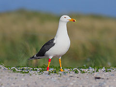
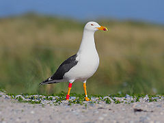

| Lesser Black-backed Gull | |
|---|---|
|  | |
| Larus fuscus graellsii; England | |
| Conservation status | |
| Binomial name | |
| Larus fuscus Linnaeus, 1758 |
| Lesser Black-backed Gull | |
|---|---|
|  | |
| Larus fuscus graellsii; England | |
| Conservation status | |
| Binomial name | |
| Larus fuscus Linnaeus, 1758 |
The Lesser Black-backed Gull (Larus fuscus) is a large gull that breeds on the Atlantic coasts of Europe. It is migratory, wintering from the British Isles south to West Africa. It is a regular winter visitor to the east coast of North America, probably from the breeding population in Iceland.
This species breeds colonially on coasts and lakes, making a lined nest on the ground or a cliff. Normally, three eggs are laid. In some cities the species nests within the urban environment, often in association with Herring Gulls.[1]
They are similar in size but slightly smaller than the Herring Gull. The taxonomy of the Herring Gull / Lesser Black-backed Gull complex is very complicated; different authorities recognise between two and eight species. This group has a ring distribution around the northern hemisphere. Differences between adjacent forms in this ring are fairly small, but by the time the circuit is completed, the end members, Herring Gull and Lesser Black-backed Gull, are clearly different species.
The only confusable species in Europe is Great Black-backed Gull. Lesser is a smaller bird, with slimmer build, yellow rather than pinkish legs, and smaller white "mirrors" at the wing tips. The adults have black or dark grey wings (depending on race) and back. The bill is yellow with a red spot which young peck at, inducing feeding (see fixed action pattern). The head is greyer in winter, unlike Great Black-backed.
Young birds have scaly black-brown upperparts and a neat wing pattern. They take four years to reach maturity. Identification from juvenile Herring Gulls is most readily done by the more solidly dark (unbarred) tertial feathers.
The call is a "laughing" cry like that of the Herring Gull (to which this species is closely related), but with a markedly deeper pitch.
They are omnivores like most Larus gulls, and they will eat fish, insects, crustaceans, worms, starfish, molluscs, seeds, berries, small mammals, eggs, small birds, chicks, scraps, offal and carrion.
There are three races:
See also – ring species.

{kind=link}